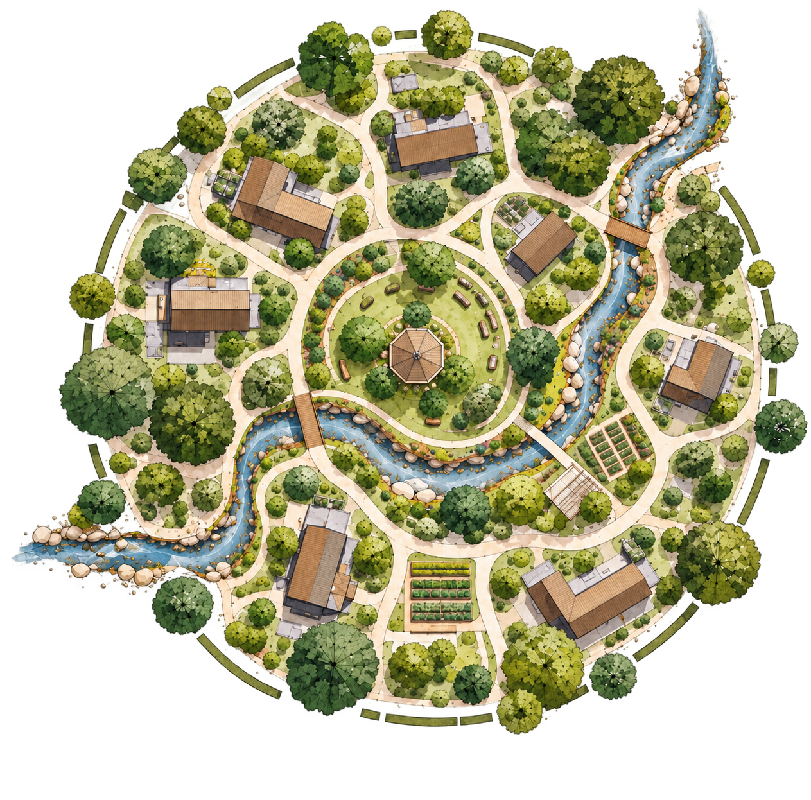
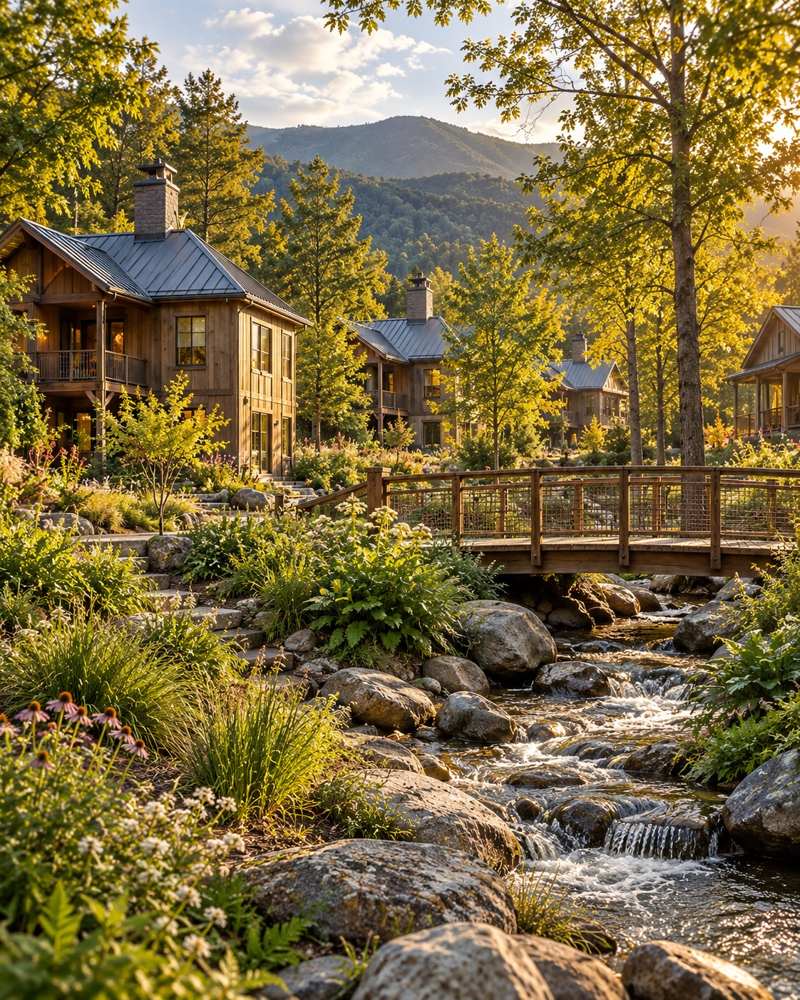

People
Homes and neighborhoods that support well-being, belonging, and opportunity.
Thoughtful development for thriving communities.
Community Roots Development creates resilient, beautiful places to live—grounded in people, place, and long-term stewardship.
Our vision
A different approach
We envision communities that nurture connection, support ecological health, and create lasting value for residents and the region.
About our approachHomes and neighborhoods that support well-being, belonging, and opportunity.
Design that respects the land, water, and unique character of Western North Carolina.
Long-term thinking for healthy communities, resilient landscapes, and a more vibrant tomorrow.
Places to belong
From intimate neighborhoods to purpose-driven housing, our vision is to create places where people can put down roots and live well.

Our work
Architecture, land planning, and development working together—to create sustainable, livable, and economically viable communities.
Working with the land, not against it.
Efficient, durable, and beautiful.
Shared spaces that build connection.
Clean water, healthy ecosystems, lasting value.
Founded by Aaron Maret, an architect, general contractor, and design-build practitioner bringing more than two decades of experience to an architect-led development vision.
A healthier tomorrow
We believe good development creates more than homes—it builds healthier people, stronger communities, and more resilient places for generations to come.
Healthy land and clean water.
Connection and opportunity.
Thoughtful, durable investments.
Vibrant communities in Western NC.
Let’s build what’s next
We welcome conversations with landowners, communities, development collaborators, and capital partners to bring meaningful places to life.
Shared values. Thoughtful feasibility. A commitment to lasting value.
Get in touch me@aaronmaret.com